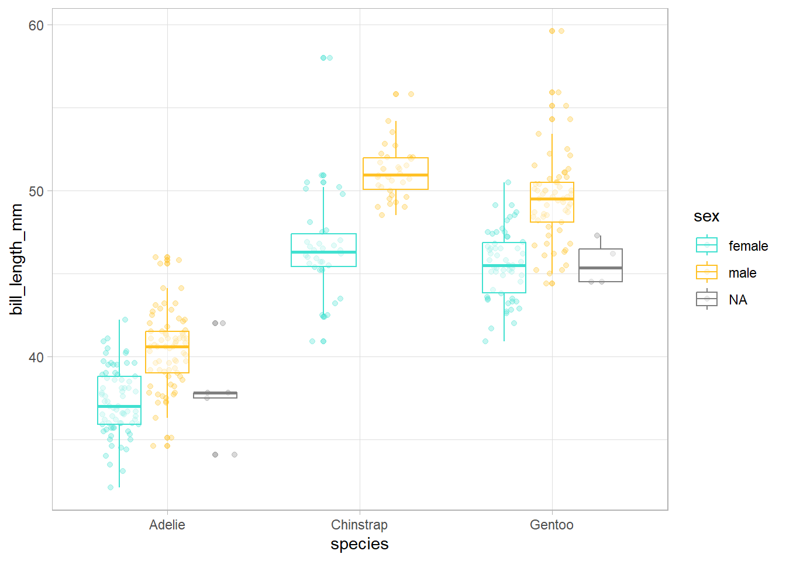
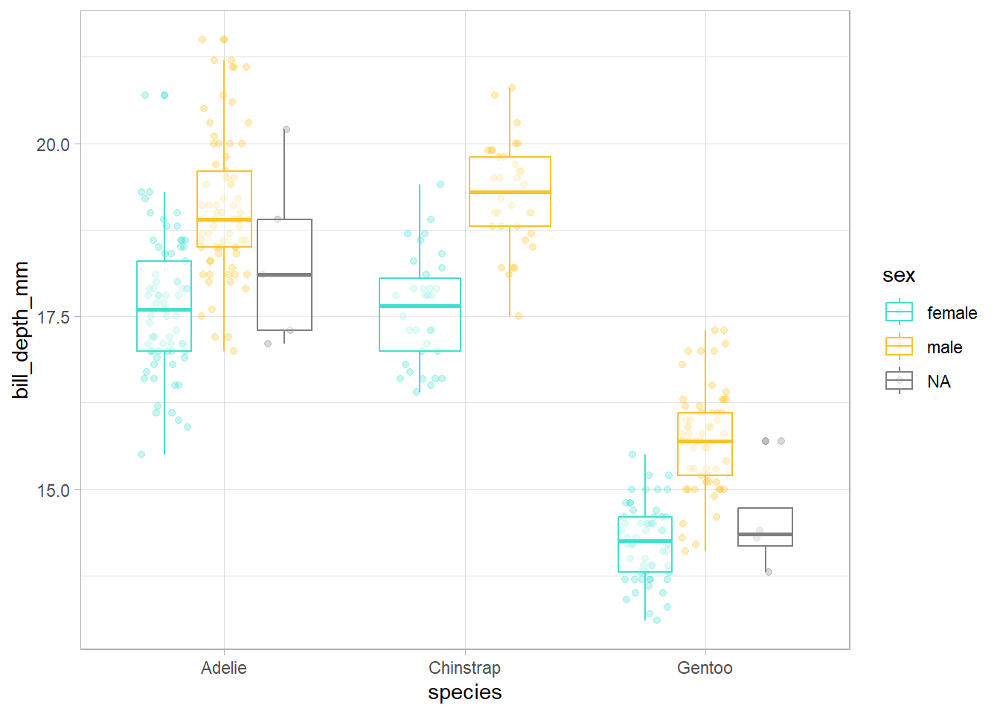
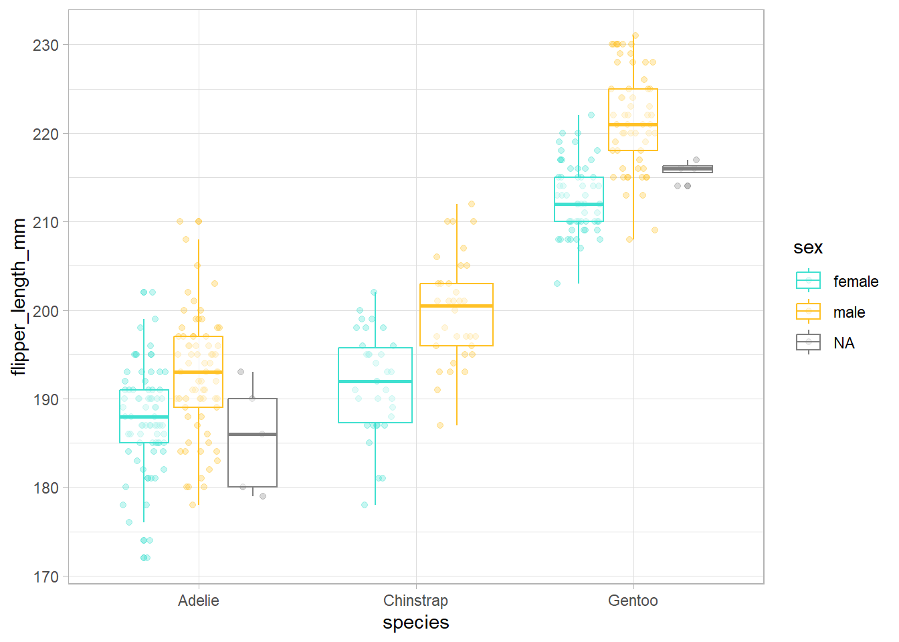
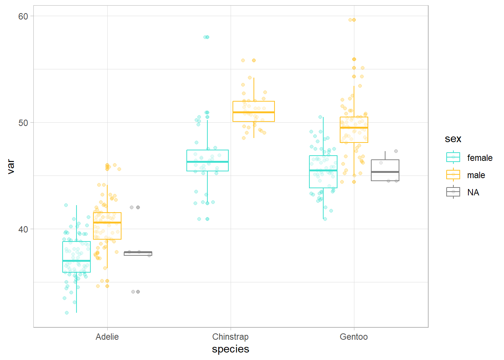
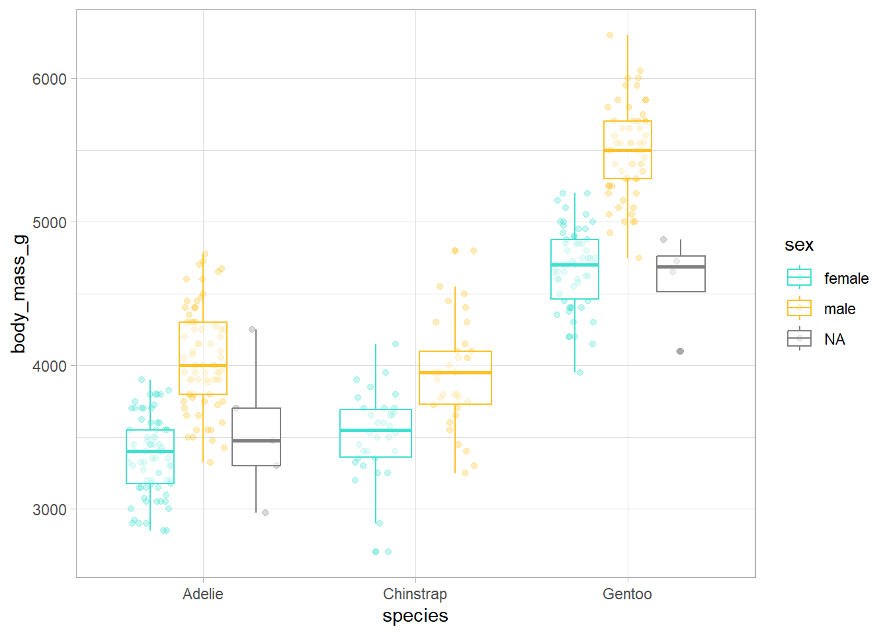
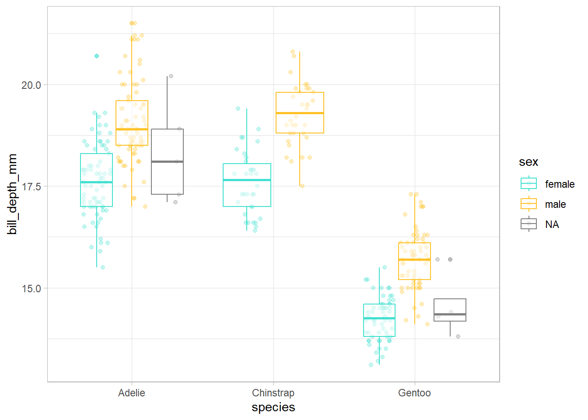

aplicar funciones en programación iterativa mediante el paquete {purrr} de {tidyverse}
aprender estilos de c√≥digo que facilitan su comprensi√≥n (üìù)
Dentro del modelo de ciencia de datos de Hadley Wickham, Mine Çetinkaya-Rundel y Garrett Grolemund (Figure 1), el curso de centra en el marco que envuelve todo el proceso, es decir, la programación.
Figure 1: Modelo de ciencia de datos de Hadley Wickham, Mine Çetinkaya-Rundel y Garrett Grolemund. Traducido de https://r4ds.hadley.nz/intro#fig-ds-diagram
Verónica Cruz-Alonso (veronica.cral@gmail.com) y Julen Astigarraga (julenastigarraga@gmail.com). Coordinamos el grupo de trabajo de Ecoinformática de la Asociación Española de Ecología Terrestre. En DatSciR publicamos los materiales de los cursos que impartimos.
El proceso de aprendizaje en R, por Allison Horst. https://allisonhorst.com/everything-else
2.1 Conceptos muy básicos
R: lenguaje de programación dinámico (se interpreta el código en el momento que se ejecuta).
RStudio: es un entorno de desarrollo integrado para programar en R. Tiene cuatro zonas diferenciadas: el editor de código, la consola (donde se ejecuta el código), el navegador del espacio de trabajo (con el entorno –environment– y el historial de comandos) y el mix de abajo a la derecha (Archivos, Gráficos, Paquetes, Ayuda).
Objetos: cualquier elemento almacenado con un nombre específico. Pueden ser de muchos tipos: numeric, integer, logical, data.frame, SpatVector, etc.
# install.packages("tidyverse")library(tidyverse)
Warning: package 'ggplot2' was built under R version 4.3.3
Warning: package 'tidyr' was built under R version 4.3.3
Warning: package 'readr' was built under R version 4.3.2
Warning: package 'purrr' was built under R version 4.3.2
Warning: package 'dplyr' was built under R version 4.3.2
Warning: package 'stringr' was built under R version 4.3.2
Warning: package 'lubridate' was built under R version 4.3.2
── Attaching core tidyverse packages ──────────────────────── tidyverse 2.0.0 ──
✔ dplyr 1.1.4 ✔ readr 2.1.5
✔ forcats 1.0.0 ✔ stringr 1.5.1
✔ ggplot2 3.5.0 ✔ tibble 3.2.1
✔ lubridate 1.9.3 ✔ tidyr 1.3.1
✔ purrr 1.0.2
── Conflicts ────────────────────────────────────────── tidyverse_conflicts() ──
✖ dplyr::filter() masks stats::filter()
✖ dplyr::lag() masks stats::lag()
ℹ Use the conflicted package (<http://conflicted.r-lib.org/>) to force all conflicts to become errors
Trabajar con listas es muy común en R. De echo el output por defecto de map() son listas. Sin embargo, las listas pueden resultar a veces desordenadas, p. ej., cuando perdemos el nombre de cada elemento de la lista. La función nest() de {tidyr} nos permite trabajar con listas-columnas en data frames, generando una fila para cada grupo definido por las columnas no anidadas (es decir, non-nested columns).
mynested_tibble <- mytibble |># data.frame with list-columnsgroup_by(v3) |>nest()mynested_tibble
# A tibble: 2 × 2
# Groups: v3 [2]
v3 data
<chr> <list>
1 hi <tibble [2 × 2]>
2 hola <tibble [2 × 2]>
üí°Explora los diferentes tipos de objetos aqu√≠.
Funciones: objetos de R que toman un vector de entrada y dan como resultado otro vector haciendo una acción concreta (funcionalidad específica). Son los bloques de construcción fundamentales en cualquier script de R que es un lenguaje funcional.
Para comprender la computación en R, resultan útiles dos lemas:
üí°Más informaci√≥n sobre las tres verdades en R aqu√≠.
Paquetes o librerias: contienen funciones reutilizables, documentación sobre cómo usarlas y datos de ejemplo. Son las unidades fundamentales de código reproducible en R.
CRAN: the Comprehensive R Archive Network.
2.1.1 Ejercicio
Elije un número y multiplicalo por 3
Crea un objeto que contenga 100 valores entre 1900 y 2000
Suma un número a tu objeto
Multiplica tu objeto por sí mismo
üìùLos nombre de los objetos deben ser descriptivos y no pueden contener s√≠mbolos especiales (^, !, $, @, +, -, /, *).
üìùR es sensible a las mayúsculas. Mejor no usarlas.
2.2 Tidyverse
Tidyverse es una colección de paquetes (meta-paquete) de R desarrollado por Hadley Wickham. Contiene ocho paquetes principales: {readr}, {tibble}, {dplyr}, {tidyr}, {stringr}, {forcats}, {ggplot2} y {purrr}. Tidyverse puede considerarse un dialecto del lenguaje de programación de R y, por ello, puede resultar difícil de aprender para gente con experiencia en el lenguaje tradicional de R base. Sin embargo, en este curso queremos enseñar las bases de programación utilizando tidyverse ya que en las secciones de iteración utilizaremos fundamentalmente purrr por razones que explicaremos más adelante.
# A tibble: 344 × 8
species island bill_length_mm bill_depth_mm flipper_length_mm body_mass_g
<fct> <fct> <dbl> <dbl> <int> <int>
1 Adelie Torgersen 39.1 18.7 181 3750
2 Adelie Torgersen 39.5 17.4 186 3800
3 Adelie Torgersen 40.3 18 195 3250
4 Adelie Torgersen NA NA NA NA
5 Adelie Torgersen 36.7 19.3 193 3450
6 Adelie Torgersen 39.3 20.6 190 3650
7 Adelie Torgersen 38.9 17.8 181 3625
8 Adelie Torgersen 39.2 19.6 195 4675
9 Adelie Torgersen 34.1 18.1 193 3475
10 Adelie Torgersen 42 20.2 190 4250
# ℹ 334 more rows
# ℹ 2 more variables: sex <fct>, year <int>
summary(penguins)
species island bill_length_mm bill_depth_mm
Adelie :152 Biscoe :168 Min. :32.10 Min. :13.10
Chinstrap: 68 Dream :124 1st Qu.:39.23 1st Qu.:15.60
Gentoo :124 Torgersen: 52 Median :44.45 Median :17.30
Mean :43.92 Mean :17.15
3rd Qu.:48.50 3rd Qu.:18.70
Max. :59.60 Max. :21.50
NA's :2 NA's :2
flipper_length_mm body_mass_g sex year
Min. :172.0 Min. :2700 female:165 Min. :2007
1st Qu.:190.0 1st Qu.:3550 male :168 1st Qu.:2007
Median :197.0 Median :4050 NA's : 11 Median :2008
Mean :200.9 Mean :4202 Mean :2008
3rd Qu.:213.0 3rd Qu.:4750 3rd Qu.:2009
Max. :231.0 Max. :6300 Max. :2009
NA's :2 NA's :2
# se pueden utilizar todo tipo de patrones de texto: https://rstudio.github.io/cheatsheets/strings.pdfpenguins |>select(sex, body_mass_g, everything()) # se puede usar para reordenar variables
# A tibble: 344 × 8
sex body_mass_g species island bill_length_mm bill_depth_mm
<fct> <int> <fct> <fct> <dbl> <dbl>
1 male 3750 Adelie Torgersen 39.1 18.7
2 female 3800 Adelie Torgersen 39.5 17.4
3 female 3250 Adelie Torgersen 40.3 18
4 <NA> NA Adelie Torgersen NA NA
5 female 3450 Adelie Torgersen 36.7 19.3
6 male 3650 Adelie Torgersen 39.3 20.6
7 female 3625 Adelie Torgersen 38.9 17.8
8 male 4675 Adelie Torgersen 39.2 19.6
9 <NA> 3475 Adelie Torgersen 34.1 18.1
10 <NA> 4250 Adelie Torgersen 42 20.2
# ℹ 334 more rows
# ℹ 2 more variables: flipper_length_mm <int>, year <int>
# A tibble: 344 × 2
sex body_mass_g
<fct> <int>
1 male 6300
2 male 6050
3 male 6000
4 male 6000
5 male 5950
6 male 5950
7 male 5850
8 male 5850
9 male 5850
10 male 5800
# ℹ 334 more rows
2.2.1 Ejercicio
Crea un objeto con los pingüinos de la especie Adelie y ordena la tabla según la longitud del ala de los individuos.
Crea un objeto a partir del anterior donde selecciones la isla y las variables relacionadas con el pico.
Crea un objeto a partir del creado en el punto 1 donde selecciones todo menos la especie.
# A tibble: 344 × 9
bill_volume_mm2 species island bill_length_mm bill_depth_mm flipper_length_mm
<dbl> <fct> <fct> <dbl> <dbl> <int>
1 366. Adelie Torge… 39.1 18.7 181
2 344. Adelie Torge… 39.5 17.4 186
3 363. Adelie Torge… 40.3 18 195
4 NA Adelie Torge… NA NA NA
5 354. Adelie Torge… 36.7 19.3 193
6 405. Adelie Torge… 39.3 20.6 190
7 346. Adelie Torge… 38.9 17.8 181
8 384. Adelie Torge… 39.2 19.6 195
9 309. Adelie Torge… 34.1 18.1 193
10 424. Adelie Torge… 42 20.2 190
# ℹ 334 more rows
# ℹ 3 more variables: body_mass_g <int>, sex <fct>, year <int>
penguins |>mutate(female_penguin =case_when( sex =="female"& body_mass_g <3600~"small female", sex =="female"& body_mass_g >=3600~"big female",TRUE~NA)) |>select(female_penguin, sex, body_mass_g)
# A tibble: 344 × 3
female_penguin sex body_mass_g
<chr> <fct> <int>
1 <NA> male 3750
2 big female female 3800
3 small female female 3250
4 <NA> <NA> NA
5 small female female 3450
6 <NA> male 3650
7 big female female 3625
8 <NA> male 4675
9 <NA> <NA> 3475
10 <NA> <NA> 4250
# ℹ 334 more rows
# summarise# se utiliza con funciones que resumen: n, n_distinct, mean, etc.# ver ?summarisepenguins |>summarise(body_min =min(body_mass_g, na.rm =TRUE),body_max =max(body_mass_g, na.rm =TRUE) )
Con el data.frame penguins, cuenta el número de casos que hay en cada isla y calcula la media de la longitud del ala en cada isla.
Con el mismo data.frame calcula la relación entre el peso en kg y la longitud del ala para cada individuo.
mypenguins <- penguins |>mutate(bill_volume_mm2 = (bill_length_mm * bill_depth_mm) /2,female_penguin =case_when( sex =="female"& body_mass_g <3600~"small female", sex =="female"& body_mass_g >=3600~"big female",TRUE~NA)) write_delim(mypenguins, file ="mypenguins.csv", delim =";")# en file hay que especificar el directorio donde queremos que se guarde. Si no, se guardará en el directorio de trabajo (getwd())misdatos <-read_delim(file ="mypenguins.csv")View(misdatos)
En relación al name masking, el principio básico es que los nombres definidos dentro de una función enmascaran los nombres definidos fuera de la función. Pero si un nombre no está definido dentro de una función, R buscará en un environment superior.
x <-10y <-20myfunction <-function() { x <-1 y <-2 x + y}myfunction()
[1] 3
Si un nombre no está definido dentro de una función, R buscará en un nivel superior. Ilustración de Cristina Grajera
En general, con R base sólo podemos llamar a objetos que forman parte del entorno (env-variables) aunque hay excepciones; en cambio, con tidyverse es muy común llamar a las variables dentro de las tablas (data-variables). Esta característica llamada non-standard evaluation simplifica el código en tidyverse, pero la ventaja no tiene coste cero y tiene implicaciones en la sintaxis de las funciones como veremos más adelante.
penguins |>filter(island =="Dream", species =="Chinstrap") |>select(flipper_length_mm)
La creciente disponibilidad de datos y de versatilidad de los programas de análisis han provocado el incremento en la cantidad y complejidad de los análisis que realizamos. Esto hace cada vez más necesaria la eficiencia en el proceso de gestión y análisis de datos. Una de las posibles formas para optimizar estos procesos y acortar los tiempos de trabajo para los usuarios de R es la programación basada en funciones. Las funciones permiten automatizar tareas comunes (por ejemplo, leer diferentes bases de datos) simplificando el código.
Las principales ventajas de la programación funcional (uso de funciones e iteraciones) son:
Facilidad para ver la intención del código y, por tanto, mejorar la comprensión para uno mismo, colaboradores y revisores:
Las funciones tienen un nombre evocativo.
El código queda más ordenado.
Rapidez si se necesitan hacer cambios ya que las funciones son piezas independientes que resuelven un problema concreto.
Disminuye la probabilidad de error.
3.1 ¿Cuándo hay que usar una función?
Se recomienda seguir el principio “do not repeat yourself” (DRY principle): cada unidad de conocimiento o información debe tener una representación única, inequívoca y autoritativa en un sistema.
Las funciones primitivas son la excepción ya que no tienen los citados componentes. Están escritas en C en lugar de en R y sólo aparecen en el paquete base. Son más eficientes pero se comportan diferente a otras funciones, así que R Core Team intenta no crear nuevas funciones primitivas. El resto de funciones siguen la estructura indicada arriba.
sum
function (..., na.rm = FALSE) .Primitive("sum")
body(sum)
NULL
Según el tipo de output generado hay dos tipos de funciones:
Las funciones de transformación transforman el objeto que entra en la función (primer argumento) y devuelven otro objeto o el anterior modificado. Los funcionales son tipos especiales de funciones de transformación.
Las funciones secundarias (side-effect functions) tienen efectos colaterales y ejecutan una acción, como guardar un archivo o dibujar un plot. Algunos ejemplos de funciones secundarias que se usan comunmente son: library(), setwd(), plot(), write_delim()… Estas funciones retornan de forma invisible el primer argumento, que no se guarda, pero puede ser usado en un pipeline.
En general, sintácticamente, las funciones tienen tres componentes:
Función function() (primitiva)
Argumentos: lista de entradas.
Cuerpo: trozo de código que sigue a function(), tradicionalmente entre llaves.
nombre1_v1 <-function(x, y) {paste(x, y, sep ="_")} nombre1_v2 <-function(x, y) paste(x, y, sep ="_") nombre1_v3 <- \(x, y) paste(x, y, sep ="_")nombre1_v1("Vero", "Cruz")
En general las funciones tienen un nombre que se ejecuta cuando se necesita como hemos visto hasta ahora, pero esto no es obligatorio. Algunos paquetes como {purrr} o las funciones de la familia apply permiten el uso de funciones anónimas para iterar.
Call:
lm(formula = body_mass_g ~ bill_length_mm, data = df)
Residuals:
Min 1Q Median 3Q Max
-782.58 -260.68 0.07 247.32 1095.42
Coefficients:
Estimate Std. Error t value Pr(>|t|)
(Intercept) 34.88 458.44 0.076 0.939
bill_length_mm 94.50 11.79 8.015 2.95e-13 ***
---
Signif. codes: 0 '***' 0.001 '**' 0.01 '*' 0.05 '.' 0.1 ' ' 1
Residual standard error: 384.6 on 149 degrees of freedom
(1 observation deleted due to missingness)
Multiple R-squared: 0.3013, Adjusted R-squared: 0.2966
F-statistic: 64.24 on 1 and 149 DF, p-value: 2.955e-13
üìù Mejor reservar el uso de funciones an√≥nimas para funciones cortas y simples. Si la funci√≥n es larga, ocupa varias l√≠neas o tenemos que usarla con frecuencia mejor darle un nombre.
5 Cómo escribir funciones
5.0.1 Ejercicio
Genera tu primera función que divida un valor siempre entre 100.
üí°Atajo para escribir funciones: escribir la palabra fun + tabulador
penguins_num <- penguins |>select(species, sex, where(is.numeric))# nos interesan las diferencias entre especie y sexoggplot(penguins_num, aes(x = species, y = bill_length_mm, color = sex)) +geom_point(position =position_jitterdodge(), alpha =0.3) +geom_boxplot(alpha =0.5) +scale_color_manual(values =c("turquoise", "goldenrod1")) +theme_light()

ggplot(penguins_num, aes(x = species, y = bill_depth_mm, color = sex)) +geom_point(position =position_jitterdodge(), alpha =0.3) +geom_boxplot(alpha =0.5) +scale_color_manual(values =c("turquoise", "goldenrod1")) +theme_light()

ggplot(penguins_num, aes(x = species, y = flipper_length_mm, color = sex)) +geom_point(position =position_jitterdodge(), alpha =0.3) +geom_boxplot(alpha =0.5) +scale_color_manual(values =c("turquoise", "goldenrod1")) +theme_light()

# etc
Hemos copiado un código más de dos veces para realizar una misma acción (es decir, un gráfico para ver como se distribuye una variable en función de otras dos que se mantienen constantes) así que hay que considerar la posibilidad de que estemos necesitando una función. A continuación vamos a seguir unos sencillos pasos para transformar cualquier código repetido en función.
Analizar el código: ¿cuáles son las partes replicadas? ¿cuantas entradas tenemos? ¿cuáles varían y cuáles no?
Simplificar y reanalizar duplicaciones
var <- penguins_num$bill_length_mmggplot(penguins_num, aes(x = species, y = var, color = sex)) +geom_point(position =position_jitterdodge(), alpha =0.3) +geom_boxplot(alpha =0.5) +scale_color_manual(values =c("turquoise", "goldenrod1")) +theme_light()

var <- body_mass_g
Error in eval(expr, envir, enclos): object 'body_mass_g' not found
var <-"body_mass_g"ggplot(penguins_num, aes(x = species, y = var, color = sex)) +geom_point(position =position_jitterdodge(), alpha =0.3) +geom_boxplot(alpha =0.5) +scale_color_manual(values =c("turquoise", "goldenrod1")) +theme_light() +ylab(var) # grafico erroneo
üìù Crear objetos con cálculos intermedios dentro de una funci√≥n, es una buena práctica porque deja más claro lo que el c√≥digo está haciendo.
Probar con entradas diferentes
explorar_penguins(var ="body_mass_g")
Warning: Removed 2 rows containing non-finite outside the scale range
(`stat_boxplot()`).
Warning: Removed 2 rows containing missing values or values outside the scale range
(`geom_point()`).

explorar_penguins(var ="flipper_length_mm")
Warning: Removed 2 rows containing non-finite outside the scale range
(`stat_boxplot()`).
Removed 2 rows containing missing values or values outside the scale range
(`geom_point()`).
explorar_penguins(var ="bill_depth_mm")
Warning: Removed 2 rows containing non-finite outside the scale range
(`stat_boxplot()`).
Removed 2 rows containing missing values or values outside the scale range
(`geom_point()`).

üí°Puedes querer convertir estas pruebas en test formales. En funciones complejas sirven para que, aunque hagas cambios, se pueda comprobar que la funcionalidad no se ha roto. Si estás interesado mira este enlace.
üìù Los nombres de los argumentos deben ser cortos y descriptivos. Hay algunos comunes pero poco descriptivos que ya son conocidos para la mayor√≠a de los usuarios y está bien aprovecharlos:
x, y, z: vectores
w: vector de pesos
df: data frame
i, j: indices numericos, filas y columnas respectivamente
n: longitud o número de filas
p: numero de columnas
na.rm: valores faltantes
A la hora de ejecutar la función los argumentos se pueden especificar utilizando el nombre completo, una abreviatura unequívoca o el órden de su posición (unnamed arguments), siendo esta secuencia (nombre > abreviatura > posición) el órden de prioridad a la hora de hacer corresponder los argumentos con lo que se escribe.
üìù Generalmente s√≥lo se usa el orden de posici√≥n para especificar los primeros argumentos, los más comunes que todo el mundo conoce. Si se cambia un argumento de detalle con valor por defecto conviene poner siempre el nombre completo.
Hay un argumento especial llamado …, que captura cualquier otro argumento que no se corresponde con los nombrados en la función. Se utiliza para transmitir argumentos a otras funciones incluidas en nuestra función.
?plotplot(1:5, 1:5)plot(1:5, 1:5, main ="Estoy usando argumentos de title()")
üìù Usar ‚Ķ hace que las funciones sean muy flexibles, pero hace necesario leer cuidadosamente la documentaci√≥n para poder usarlo. Además, si se escribe mal un argumento no sale error.
sum(1, 2, 5, na.mr =TRUE)
[1] 9
sum(1, 2, NA, na.mr =TRUE)
[1] NA
5.2 Valores de retorno
La última expresión ejecutada en una función es el valor de retorno. Es el resultado de ejecutar la función, a no ser que se especifique invisible(). Las funciones arrojan un sólo objeto. Si se quieren obtener más, tendrán que agruparse en formato de lista.
La principal razón para utilizar la POO es el polimorfismo (del latín “muchas formas”). El polimorfismo permite a un desarrollador considerar la interfaz de una función por separado de su implementación, lo que facilita el uso de la misma función con diferentes tipos de entrada. Para entender esto, probad a correr el siguiente código.
summary(penguins$bill_depth_mm)
Min. 1st Qu. Median Mean 3rd Qu. Max. NA's
13.10 15.60 17.30 17.15 18.70 21.50 2
summary(penguins$sex)
female male NA's
165 168 11
Podrías pensar que summary() utiliza una serie de declaraciones if-else según el tipo de los datos de entrada, pero en este caso solo el autor original podría añadir nuevas implementaciones. Sin embargo, un sistema de POO permite que cualquier desarrollador extienda la interfaz mediante la creación de implementaciones para nuevos tipos de entrada.
En la programación imperativa las herramientas más comunes para reducir duplicidades son los bucles for y los bucles while (for loops y while loops). Los bucles son recomendables para adentrarse en el mundo de las iteraciones porque hacen cada iteración muy explícita para que quede claro lo que está pasando.
Representación gráfica del funcionamiento de los bucles for donde se ve claramente que se está realizando una iteración. Ilustración de Allison Horst obtenido de la charla de Hadley Wickham The Joy of Functional Programming (para ciencia de datos)
Para programar un bucle es necesario definir tres partes diferentes: la salida, la secuencia y el cuerpo.
Salida: aquí determinamos el espacio de la salida, es decir, primero tenemos que crear la libreta donde vamos a ir apuntando todos los resultados. Esto es muy importante para la eficiencia puesto que si aumentamos el tamaño del for loop en cada iteración con c() u otra función que vaya añadiendo elementos, el bucle for será mucho más lento.
x <-c()system.time(for(i in1:20000) { x <-c(x, i) })
user system elapsed
0.21 0.12 0.45
y <-vector("double", length =20000)system.time(for(i inseq_along(y)) { y[i] <- i })
user system elapsed
0 0 0
Secuencia: aquí determinamos sobre lo que queremos iterar. Cada ejecución del bucle for asignará un valor diferente de seq_along(y) a i .
Cuerpo: aquí determinamos lo que queremos que haga cada iteración. Se ejecuta repetidamente, cada vez con un valor diferente para i.
Existen distintas variaciones de los bucles for: (i) modificar un objeto existente en lugar de crear uno nuevo; (ii) bucles sobre nombres o valores en lugar de sobre índices; (iii) bucles cuando desconocemos la longitud de la salida; (iv) bucles cuando desconocemos la longitud de la secuencia de entrada, es decir, bucles while.
üëÄ Algunos errores comunes cuando se utilizan bucles for (ver 5.3.1 Common pitfalls).
A pesar de ser muy utilizados en R, los bucles for no son tan importantes como pueden ser en otros lenguajes porque R es un lenguaje de programación funcional. Esto significa que es posible envolver los bucles for en una función y llamar a esa función en vez de utilizar el bucle.
Para ser significativamente más fiable, el código debe ser más transparente. En particular, las condiciones anidadas y los bucles deben considerarse con gran recelo. Las esctructuras de control complicados confunden a los programadores. El código desordenado suele ocultar errores.
Representación gráfica del funcionamiento de map() donde el foco está en la operación realizada. Ilustración de Allison Horst obtenido de la charla de Hadley Wickham The Joy of Functional Programming (para ciencia de datos)
En la programación funcional, las funciones están diseñadas para realizar una única tarea específica y luego se combinan llamando a estas funciones sucesivamente para el conjunto de datos. Una ventaja significativa de este enfoque es que estas funciones pueden ser reutilizadas en cualquier otro proyecto, lo que facilita la modularidad del código. Además, cuando están bien documentadas y son fácilmente testables, resulta sencillo comprender y mantener el programa.
R es un lenguaje de programación funcional por lo que se basa principalmente en un estilo de resolución de problemas centrado en funciones (https://adv-r.hadley.nz/fp.html).
Un funcional es una función que toma una función como entrada y devuelve un vector u otro tipo de objeto como salida.
La ventaja de utilizar {purrr} en vez de bucles for es que ofrece una función (funcional) para cada uno de los problemas comunes de manipulación de datos y, por lo tanto, cada bucle for tiene su propia función. Por ejemplo, para iterar sobre un argumento utilizamos la función map() y para iterar sobre dos argumentos la funcion map2(). La familia apply de R base soluciona problemas similares, pero {purrr} es más consistente y, por lo tanto, más fácil de aprender.
Iterar sobre un vector es tan común que el paquete {purrr} proporciona una familia de funciones (la familia map()) para ello. Existe una función en {purrr} para cada tipo de salida. Los sufijos indican el tipo de salida que queremos:
map() genera una lista.
map_lgl() genera un vector lógico.
map_int() genera un vector de números enteros.
map_dbl() genera un vector de números decimales.
map_chr() genera un vector de caracteres.
map_vec() genera un vector que determina automáticamente el tipo.
Recordad que los data.frame son un tipo especial de lista donde cada elemento de la lista es una columna (vector), y todas las columnas deben tener la misma longitud (es decir, el número de filas debe ser consistente), por lo que cualquier cálculo por columnas supone iteracionar sobre un vector.
salida <-vector("double", 3)for (i in1:3) { salida[[i]] <-first(df_ej[[i]])}salida
[1] 3 3 2
Comparando con un bucle, el foco está en la operación que se está ejecutando (first()), y no en el código necesario para iterar sobre cada elemento y guardar la salida.
8 Iteraciones sobre un argumento
map_*() está vectorizado sobre un argumento, p. ej. (x). La función operará en todos los elementos de x, es decir, cada valor si x es un vector, cada columna si x es un data.frame, o cada elemento si x es una lista.
8.1 Nuestro primer funcional: generando listas, map()
Toma un vector y una función, llama a la función una vez por cada elemento del vector y devuelve los resultados en una lista. map(1:3, f) es equivalente a list(f(1), f(2), f(3)). Es el equivalente de lapply() de R base.
cuadratica <-function(x) { x ^2}map(.x =1:4, .f = cuadratica)
# A tibble: 1 × 8
species island bill_length_mm bill_depth_mm flipper_length_mm body_mass_g
<int> <int> <int> <int> <int> <int>
1 3 3 165 81 56 95
# ℹ 2 more variables: sex <int>, year <int>
8.1.1 Ejercicio
Generad un vector, una función y aplicadle la función a cada uno de los elementos del vector utilizando map().
Como hemos comentado antes, es posible envolver los bucles for en una función y llamar a esa función en lugar de utilizar el bucle.
imple_map <-function(x, f, ...) { out <-vector("list", length(x))for (i inseq_along(x)) { out[[i]] <-f(x[[i]], ...) } out}imple_map(1:4, cuadratica)
[[1]]
[1] 1
[[2]]
[1] 4
[[3]]
[1] 9
[[4]]
[1] 16
üí°Algunas ventajas de las funciones de {purrr} frente a envolver un bucle for por nuestra cuenta en una funci√≥n son que las funciones de {purrr} están escritas en C para maximizar el rendimiento, que conservan los nombres en la iteraci√≥n y que admiten algunos atajos (p. ej. \(x)).
Warning in mean.default(x): argument is not numeric or logical: returning NA
Warning in mean.default(x): argument is not numeric or logical: returning NA
Warning in mean.default(x): argument is not numeric or logical: returning NA
$species
[1] NA
$island
[1] NA
$bill_length_mm
[1] NA
$bill_depth_mm
[1] NA
$flipper_length_mm
[1] NA
$body_mass_g
[1] NA
$sex
[1] NA
$year
[1] 2008.029
map(penguins, \(x) mean(x, na.rm = T)) # opcion 1
Warning in mean.default(x, na.rm = T): argument is not numeric or logical:
returning NA
Warning in mean.default(x, na.rm = T): argument is not numeric or logical:
returning NA
Warning in mean.default(x, na.rm = T): argument is not numeric or logical:
returning NA
$species
[1] NA
$island
[1] NA
$bill_length_mm
[1] 43.92193
$bill_depth_mm
[1] 17.15117
$flipper_length_mm
[1] 200.9152
$body_mass_g
[1] 4201.754
$sex
[1] NA
$year
[1] 2008.029
map(penguins, mean, na.rm = T) # opcion 2
Warning in mean.default(.x[[i]], ...): argument is not numeric or logical:
returning NA
Warning in mean.default(.x[[i]], ...): argument is not numeric or logical:
returning NA
Warning in mean.default(.x[[i]], ...): argument is not numeric or logical:
returning NA
$species
[1] NA
$island
[1] NA
$bill_length_mm
[1] 43.92193
$bill_depth_mm
[1] 17.15117
$flipper_length_mm
[1] 200.9152
$body_mass_g
[1] 4201.754
$sex
[1] NA
$year
[1] 2008.029
bill_length_mm bill_depth_mm flipper_length_mm body_mass_g
44.45 17.30 197.00 4050.00
year
2008.00
map_chr(penguins, class)
species island bill_length_mm bill_depth_mm
"factor" "factor" "numeric" "numeric"
flipper_length_mm body_mass_g sex year
"integer" "integer" "factor" "integer"
map_int(penguins, \(x) length(unique(x)))
species island bill_length_mm bill_depth_mm
3 3 165 81
flipper_length_mm body_mass_g sex year
56 95 3 3
R base tiene dos funciones de la familia apply() que pueden devolver vectores: sapply() y vapply(). Recomendamos evitar sapply() porque intenta simplificar el resultado y elige un formato de salida por defecto, pudiendo devolver una lista, un vector o una matriz. vapply() es más seguro porque permite indicar el formato de salida con FUN.VALUE. La principal desventaja de vapply() es que se necesitan especificar más argumentos que en map_*().
⚡¡Importante! La primera iteración corresponde al primer valor del vector x y al primer valor del vector y. La segunda iteración corresponde al segundo valor del vector x y al segundo valor del vector y. No se hacen todas las combinaciones posibles entre ambos vectores.
imple_map2 <-function(x, y, f, ...) { out <-vector("list", length(x))for (i inseq_along(x)) { out[[i]] <-f(x[[i]], y[[i]], ...) } out}imple_map2(x, y, potencia)
A partir del código que se muestra a continuación generad un data.frame, agregando una columna al data.frame con el nombre que le hemos asignado a cada lista.
penguins_list <- penguins |>group_split(species)# asignamos nombres a las listasnames(penguins_list) <-c("p1", "p2", "p3")
9.1.2 Ejercicio avanzado ü§Ø
Calculad la correlación entre las predicciones almacenadas en la lista-columna pred y bill_length_mm.
10.1 Nuestro quinto funcional: walk(), walk2() y pwalk()
Cuando queremos utilizar funciones por sus efectos secundarios (side effects, p. ej. ggsave()) y no por su valor resultante. Lo importante es la acción y no el valor u objeto resultante en R.
10.1.1 Ejercicio
En base a lo que dice en la definición sobre la familia walk(), corred este código y entended lo que hace.
# A tibble: 3 × 3
# Groups: species [3]
species data path
<fct> <list> <glue>
1 Adelie <tibble [152 × 7]> penguins_Adelie.csv
2 Gentoo <tibble [124 × 7]> penguins_Gentoo.csv
3 Chinstrap <tibble [68 × 7]> penguins_Chinstrap.csv
# resultado devuelto de forma invisible walk2(penguins_nested_str$data, penguins_nested_str$path, write_csv)# resultado devuelto de forma visible utilizando parentesis (walk2(penguins_nested_str$data, penguins_nested_str$path, write_csv))
[[1]]
# A tibble: 152 × 7
island bill_length_mm bill_depth_mm flipper_length_mm body_mass_g sex year
<fct> <dbl> <dbl> <int> <int> <fct> <int>
1 Torge… 39.1 18.7 181 3750 male 2007
2 Torge… 39.5 17.4 186 3800 fema… 2007
3 Torge… 40.3 18 195 3250 fema… 2007
4 Torge… NA NA NA NA <NA> 2007
5 Torge… 36.7 19.3 193 3450 fema… 2007
6 Torge… 39.3 20.6 190 3650 male 2007
7 Torge… 38.9 17.8 181 3625 fema… 2007
8 Torge… 39.2 19.6 195 4675 male 2007
9 Torge… 34.1 18.1 193 3475 <NA> 2007
10 Torge… 42 20.2 190 4250 <NA> 2007
# ℹ 142 more rows
[[2]]
# A tibble: 124 × 7
island bill_length_mm bill_depth_mm flipper_length_mm body_mass_g sex year
<fct> <dbl> <dbl> <int> <int> <fct> <int>
1 Biscoe 46.1 13.2 211 4500 fema… 2007
2 Biscoe 50 16.3 230 5700 male 2007
3 Biscoe 48.7 14.1 210 4450 fema… 2007
4 Biscoe 50 15.2 218 5700 male 2007
5 Biscoe 47.6 14.5 215 5400 male 2007
6 Biscoe 46.5 13.5 210 4550 fema… 2007
7 Biscoe 45.4 14.6 211 4800 fema… 2007
8 Biscoe 46.7 15.3 219 5200 male 2007
9 Biscoe 43.3 13.4 209 4400 fema… 2007
10 Biscoe 46.8 15.4 215 5150 male 2007
# ℹ 114 more rows
[[3]]
# A tibble: 68 × 7
island bill_length_mm bill_depth_mm flipper_length_mm body_mass_g sex year
<fct> <dbl> <dbl> <int> <int> <fct> <int>
1 Dream 46.5 17.9 192 3500 fema… 2007
2 Dream 50 19.5 196 3900 male 2007
3 Dream 51.3 19.2 193 3650 male 2007
4 Dream 45.4 18.7 188 3525 fema… 2007
5 Dream 52.7 19.8 197 3725 male 2007
6 Dream 45.2 17.8 198 3950 fema… 2007
7 Dream 46.1 18.2 178 3250 fema… 2007
8 Dream 51.3 18.2 197 3750 male 2007
9 Dream 46 18.9 195 4150 fema… 2007
10 Dream 51.3 19.9 198 3700 male 2007
# ℹ 58 more rows
# imapmap2(penguins, names(penguins), \(x, y) paste("La columna", y, "tiene", length(unique(x)), "valores unicos contando los NA's"))
$species
[1] "La columna species tiene 3 valores unicos contando los NA's"
$island
[1] "La columna island tiene 3 valores unicos contando los NA's"
$bill_length_mm
[1] "La columna bill_length_mm tiene 165 valores unicos contando los NA's"
$bill_depth_mm
[1] "La columna bill_depth_mm tiene 81 valores unicos contando los NA's"
$flipper_length_mm
[1] "La columna flipper_length_mm tiene 56 valores unicos contando los NA's"
$body_mass_g
[1] "La columna body_mass_g tiene 95 valores unicos contando los NA's"
$sex
[1] "La columna sex tiene 3 valores unicos contando los NA's"
$year
[1] "La columna year tiene 3 valores unicos contando los NA's"
imap(penguins, \(x, y) paste("La columna", y, "tiene", length(unique(x)), "valores unicos contando los NA's"))
$species
[1] "La columna species tiene 3 valores unicos contando los NA's"
$island
[1] "La columna island tiene 3 valores unicos contando los NA's"
$bill_length_mm
[1] "La columna bill_length_mm tiene 165 valores unicos contando los NA's"
$bill_depth_mm
[1] "La columna bill_depth_mm tiene 81 valores unicos contando los NA's"
$flipper_length_mm
[1] "La columna flipper_length_mm tiene 56 valores unicos contando los NA's"
$body_mass_g
[1] "La columna body_mass_g tiene 95 valores unicos contando los NA's"
$sex
[1] "La columna sex tiene 3 valores unicos contando los NA's"
$year
[1] "La columna year tiene 3 valores unicos contando los NA's"
df_ej <-data.frame(a =sample(1:5),b =sample(1:5),c =sample(1:5)) colnames(df_ej) <-NULLimap(df_ej, \(x, y) paste("La columna", y, "tiene", length(unique(x)), "valores unicos contando los NA's"))
[[1]]
[1] "La columna 1 tiene 5 valores unicos contando los NA's"
[[2]]
[1] "La columna 2 tiene 5 valores unicos contando los NA's"
[[3]]
[1] "La columna 3 tiene 5 valores unicos contando los NA's"
En este curso no profundizamos en modify() e imap() porque con los demás funcionales que hemos visto podemos abordar prácticamente todos los problemas de iteración. Sin embargo, si alguien está interesado puede consultar https://adv-r.hadley.nz/functionals.html, 9.4 Map variants.
Los predicados son funciones que devuelven un solo TRUE o FALSE (p. ej., is.character()). Así, un predicado funcional aplica un predicado a cada elemento de un vector: keep(), discard(), some(), every(), detect(), detect_index()… Para más información ver: https://r4ds.had.co.nz/iteration.html, 21.9.1 Predicate functions.
# A tibble: 344 × 3
species island sex
<fct> <fct> <fct>
1 Adelie Torgersen male
2 Adelie Torgersen female
3 Adelie Torgersen female
4 Adelie Torgersen <NA>
5 Adelie Torgersen female
6 Adelie Torgersen male
7 Adelie Torgersen female
8 Adelie Torgersen male
9 Adelie Torgersen <NA>
10 Adelie Torgersen <NA>
# ℹ 334 more rows
penguins |>every(is.numeric)
[1] FALSE
dplyr::across() es similar a map() pero en lugar de hacer algo con cada elemento de un vector, data.frame o lista, hace algo con cada columna en un data.frame.
reduce() es una forma útil de generalizar una función que funciona con dos entradas (función binaria) para trabajar con cualquier número de entradas.
penguins_scaled <- penguins |>mutate(across(where(is.numeric), scale))ls <-list(age =tibble(name =c("Vero", "Julen"), age =c(100, 140)),sex =tibble(name =c("Vero", "Julen"), sex =c("F", "M")),height =tibble(name =c("Vero", "Julen"), height =c("180", "150")))ls |>reduce(full_join, by ="name")
# A tibble: 2 × 4
name age sex height
<chr> <dbl> <chr> <chr>
1 Vero 100 F 180
2 Julen 140 M 150
# equivalente a hacerls[["age"]] |>full_join(ls[["sex"]]) |>full_join(ls[["height"]])
Joining with `by = join_by(name)`
Joining with `by = join_by(name)`
# A tibble: 2 × 4
name age sex height
<chr> <dbl> <chr> <chr>
1 Vero 100 F 180
2 Julen 140 M 150
11.2.1 Operadores funcionales
Cuando utilizamos las funciones map() para repetir muchas operaciones, aumenta la probabilidad de que una de esas operaciones falle y no obtengamos ninguna salida. {purrr} proporciona algunos operadores funcionales (function operators) en forma de adverbios como safely(), possibly() o quietly() para asegurar que un error no arruine todo el proceso. Para más información ver: https://r4ds.had.co.nz/iteration.html, 21.6 Dealing with failure.
x <-list(10, "b", 3)x |>map(log)
Error in `map()`:
ℹ In index: 2.
Caused by error:
! non-numeric argument to mathematical function
[[1]]
[1] 2.302585
[[2]]
[1] NA
[[3]]
[1] 1.098612
11.2.2 Ejercicio
Aplicad cualquier variante de map() junto con un operador funcional a la base de datos penguins.
12 Más información
12.1 Paralelización
Se pueden emplear distintos núcleos de la CPU (Central Processing Unit) para ejecutar el mismo proceso con diferentes conjuntos de datos en paralelo, lo que acelera tareas largas. Algunas tareas son especialmente adecuadas para la paralelización, como aquellas que son repetitivas y tienen poca o ninguna dependencia entre sí, salvo el origen de los datos de entrada, lo que permite dividirlas fácilmente en tareas paralelas. Estas tareas suelen ser aquellas que pueden ser resueltas mediante iteraciones como las que hemos visto anteriormente. En teoría, el proceso se acelera en proporción al número de cores, pero en la práctica, hay que tener en cuenta otros factores como el tiempo consumido en transferir datos a cada proceso y el tiempo dedicado a reunir los resultados de los diferentes procesos.
R fue originalmente diseñado para ejecutarse en un solo proceso de CPU debido a que cuando se desarrolló, las CPU en general tenían un único núcleo y la computación paralela no era tan común o no estaba tan desarrollada como lo está hoy en día. Por lo tanto, para aprovechar la paralelización en R, necesitamos recurrir a paquetes adicionales. Sin embargo, es importante tener en cuenta que estos paquetes pueden estar limitados en su uso a casos y tipos de datos específicos.
library(parallel) # detectar numero de coreslibrary(future) # establecer numero de coreslibrary(furrr) # paralelizacion con mapdetectCores()# funcion para elevar al cubo un numerocubo <-function(x) {Sys.sleep(1) # simulacion tarea computacionalmente intensivareturn(x ^3)}# secuencialtiempo_inicio <-Sys.time()resultado <-map(1:10, cubo)tiempo_final <-Sys.time()cat("Tiempo de computación:", round(tiempo_final - tiempo_inicio, 1), "segundos")# establecer como vamos a resolver el proceso# aqui utilizaremos 3 nucleos pero en funcion del numero de nucleos disponibles en tu pc se puede modificarplan(multisession, workers =3)# future_map para ejecutarlo paralelamentetiempo_inicio <-Sys.time()resultado <-future_map(1:10, cubo)tiempo_final <-Sys.time()cat("Tiempo de computación:", round(tiempo_final - tiempo_inicio, 1), "segundos")# vemos que el tiempo de computacion se ha reducido casi a un 1/3 (aprox. 1/numero de cores)
Este curso está basado principalmente en la primera edición del libro R for Data Science de Hadley Wickham & Garrett Grolemund y la segunda edición del libro Advanced R de Hadley Wickham.